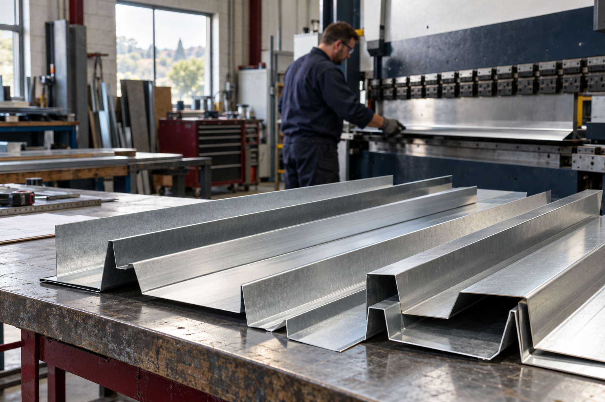

METAL FLASHINGS.
FABRICATION.
POWDER COATING.
Made to order in Littlehampton, West Sussex. From a small folded part to a complete set of flashings, talk to the team that makes it.
Tell us what you need ↗WHAT DO YOU NEED MADE?
MADE LOCALLY.
PART OF SOMETHING BIGGER.
From a small bent component to a specialist building detail, our work finds its place in projects of all sizes.
GOOD METALWORK.
GOOD PEOPLE.
You don’t need to be running a major development to call us. A small gutter, a folded profile or a repeat batch of parts — tell us what you need.
Our Littlehampton team brings sheet-metal fabrication and in-house powder coating together, with practical advice from people who understand the job.
Speak to the workshop: 01903 726500 ↗WHAT DO YOU
HAVE IN MIND?
A quick conversation is a good place to start.
No complete drawing pack needed.